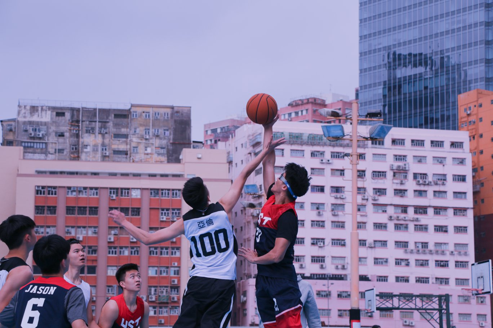

二零一八留港春季籃球比賽
Hong Kong Taiwanese Student Association
Spring Intra-University Basketball Competition 2018
On 17 Mar, 2018, one of the most exciting activities of Hong Kong Taiwanese Students Association(HKTSA), the Spring Intra-University
Basketball Competition, ended successfully.
Aimed at strengthening the bonds between Taiwanese students from different universities, the Intra-University
Basketball Competition is held in both spring and fall semester every year which provides an opportunity
for basketball teams of each university to demonstrate their hard work over the last half year. It is
also a platform for students, either team members or cheerleaders, to know more and interact with students
from other schools, and to engage in an exceptional event as Taiwaneses.
Under the warm sunshine of spring, the competition was held at an outdoor court of the Kai Tak East Playground
(東啟德遊樂場). Located near the Diamond Hill Station (鑽石山站), it has an spatial area of 4 basketball courts
and a soccer court, which was capable of accommodating all 6 teams to warm-up and practice between the
games.
After 10 fierce but exhilarating games, The University of Hong Kong (HKU) came back home with their long-awaited
champion. 1st runner-up went to The Hong Kong Polytechnic University (PolyU), and Chinese University
of Hong Kong (CUHK) won 2nd runner-up. Congratulations to all the teams, including the other two, The
Hong Kong University of Science and Technology (HKUST) and The City University of Hong Kong (CityU),
who have well demonstrated the spirit of teamwork and sportsmanship. We look forward to more exciting
games in the future.

Thanks for the participation of every team member, loyal fans, the effort of executive committees
of HKTSA, and the support by HK & Macau Taiwanese Charity Fund Ltd and Taipei Economic and Cultural Office
in Hong Kong. Without any of you, the Spring Intra-University Basketball Competition would not be successful
as it was.
article by Wei Huan Ting, Jamie